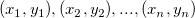
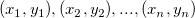

多角形面積
Math-PolygonArea
説明
Xファンクション polyarea は、多変量変数行列の決定演算子によって、多角形の面積を計算します。
この関数を使用するには、
- ワークシートの入力データを選択するか、入力データを含むプロットをアクティブにします。
- メニューから、解析：数学：多角形面積を選び、polyarea ダイアログを開きます。polyareaダイアログボックスで、Xファンクションpolyareaを使用して多角形面積を計算します。結果は、結果ログに出力されます。
ダイアログオプション
| 入力 |
入力XY範囲は閉じたプロットである必要があります。
|
| 領域の種類 |
- 数学的面積
- 面積値は正負の値をとり、アルゴリズムセクションにある数式を使用して計算されます。
- 絶対値面積
- 面積値を絶対値で計算します。値は常に正の値です。詳細については、アルゴリズムセクションをご覧下さい。
|
サンプル
- ワークブックを作成し、データ <Originインストールフォルダ>\Samples\Mathematics\Circle.datをインポートします。
- 列Bを選択し、メインメニューから作図：線図:折れ線と選択してグラフを作図します。
- 作成したグラフがアクティブであることを確認します。そして、メニューから解析：数学：多角形面積を選び、polyarea ダイアログを開きます。面積種類ドロップダウンリストで数学的面積を選択します。そして OK ボタンをクリックします。
- 結果は、結果ログに出力されます。
アルゴリズム
このXファンクションは、  平面上の区切りのない多角形の面積を計算します。多角形の頂点は、 であるとします。数学的面積は以下のように計算されます。
平面上の区切りのない多角形の面積を計算します。多角形の頂点は、 であるとします。数学的面積は以下のように計算されます。
")
")
凸型の多角形の場合、ポイントが反時計回りの場合、面積は正になります。そうでない場合、面積は負になります。
多角形の絶対面積を得るには、数学的面積の絶対値が計算されます。